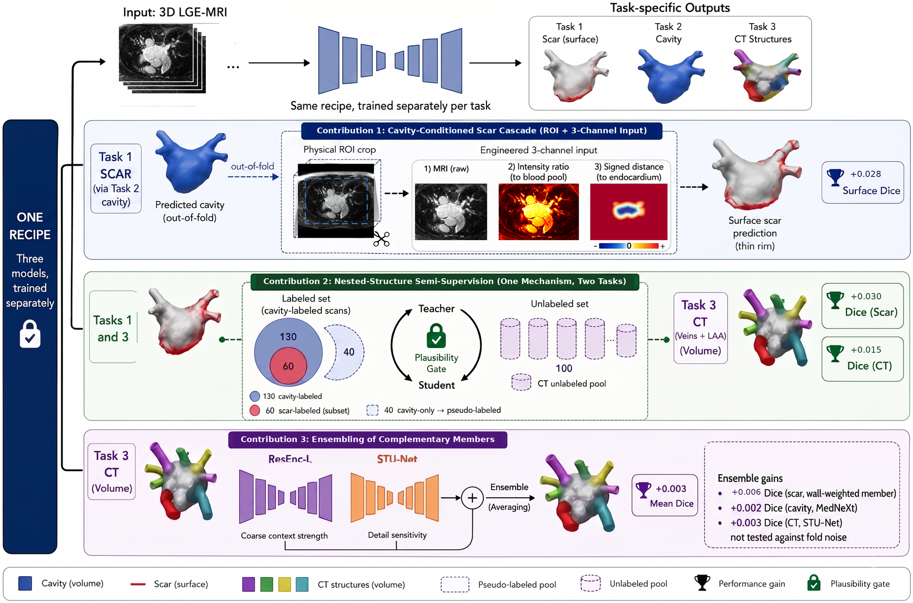
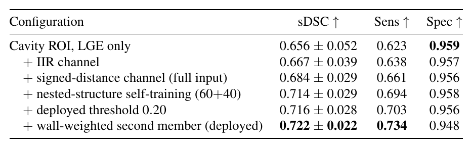
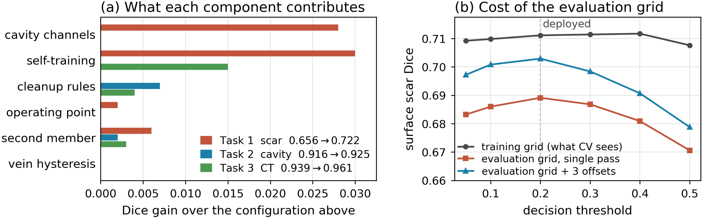
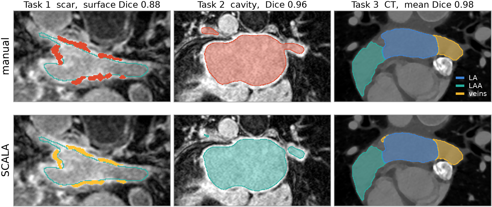

SCALA
SCALA: Semi-supervised Cascade for Left Atrial Scar, Cavity, and Multi-Structure CT Segmentation
Three tasks, one recipe, no shared weights.
Find the atrium first, then the scar.
Pseudo-label the unlabeled scans.
01 / ABSTRACT
Abstract
Segmenting left atrial structures remains challenging on both magnetic resonance imaging and computed tomography: atrial scar is small and wall-adherent, LGE-MRI intensity carries no absolute scale, acquisition varies between centers, and thin pulmonary veins dominate boundary-based metrics. We introduce SCALA, a semi-supervised cascade for the three tasks of the MICCAI 2026 CARE LeftAtrium challenge, covering atrial scar quantification on LGE-MRI, left atrial cavity segmentation, and multi-structure cardiac CT segmentation. Three task-specific residual-encoder nnU-Net models share one training recipe and one deployment pipeline but no parameters, and are never trained jointly. For scar, an out-of-fold cavity prediction supplies anatomical localization and two derived channels, an intensity ratio normalized by the blood pool and a signed distance to the endocardial surface. We exploit the nested annotation structure through self-training and ensemble complementary members, then convert probability into the reported metric with structure-specific decision rules, an on-wall component filter for scar and a double-threshold vein hysteresis for CT. A residual acquisition-grid mismatch is corrected by sub-slice offset voting fixed by the spacing ratio. Cross-validation gives surface scar Dice 0.722, cavity Dice 0.925 and CT mean Dice 0.961, while the hidden test sets return generalized Dice (G-DSC) 0.363 for scar and Dice 0.830 and 0.954 for cavity and CT.

02 / METHOD
Method
SCALA uses three task-specific residual-encoder nnU-Net pipelines. They share one training recipe and one deployment path but no parameters.
- Scar cascade (Task 1). An out-of-fold cavity prediction localizes the atrium. The scar network sees a cropped ROI with three channels: the LGE image, the image intensity ratio (IIR, LGE divided by the blood-pool mean), and the signed distance to the endocardial surface. Two members are averaged: a plain ResEnc-L and a ResEnc-L trained with an extra wall-weighted soft-Dice term. An on-wall filter then removes components more than 6 mm from the cavity.
- Self-training on the nested labels. Scar: 40 LGE scans that have a cavity label but no scar label are pseudo-labeled by a five-fold teacher. CT: 99 of the 100 unlabeled whole-chest CTs are pseudo-labeled and cropped to the LA complex. Pseudo-labeled cases only ever enter the training folds.
- Heterogeneous ensembles. Cavity: ResEnc-L + MedNeXt-M. CT: ResEnc-L + STU-Net-B, fine-tuned from TotalSegmentator weights.
- Structure-specific decision rules. Cavity: connected-component cleanup. CT: double-threshold pulmonary-vein hysteresis (0.50/0.25), keeping only vein branches that touch the LA body. Scar: probability threshold 0.20.
- Acquisition-grid correction. The scar models are planned at 2.5 mm through-plane, but the test images are 1 mm isotropic. We predict at several sub-slice z offsets (the number is set by the spacing ratio) and take the voxel-wise median.
03 / RESULTS
Results
| Scar (Task 1) | Cavity (Task 2) | CT (Task 3) | |
|---|---|---|---|
| 5-fold cross-validation | surface Dice 0.722 | Dice 0.925 | mean Dice 0.961 |
| Hidden test set (organizers) | G-DSC 0.363 | Dice 0.830, HD 22.55 mm | Dice 0.954, HD 9.33 mm |
From the paper



04 / CODE
Code and usage
Installation
git clone https://github.com/adinathdukre/SCALA.git
cd SCALA
pip install -e .
Tested with nnU-Net v2.8.0 and dynamic_network_architectures 0.4.4; PyTorch 2.12 for training and PyTorch 2.8 in the Docker image.
Custom trainers are loaded through nnU-Net's nnUNet_extTrainer hook, so the nnU-Net installation is never modified. scripts/env.sh sets this variable and the nnU-Net paths. Edit the /path/to/... defaults in it, or export SCALA_DATA, SCALA_WORK, nnUNet_raw, nnUNet_preprocessed and nnUNet_results first:
source scripts/env.sh
Pretrained Checkpoints
All checkpoints are on Hugging Face: adidukre/SCALA
huggingface-cli download adidukre/SCALA --local-dir /path/to/checkpoints
| Folder | Task | Training data | Trainer |
|---|---|---|---|
cavity_resenc |
1, 2 | Dataset501 (130 LGE-MRI) | nnUNetTrainer (ResEnc-L) |
cavity_mednext |
2 | Dataset501 | nnUNetTrainerMedNeXt |
scar_resenc |
1 | Dataset512 (60 labeled + 40 pseudo-labeled) | nnUNetTrainer (ResEnc-L) |
scar_surface |
1 | Dataset512 | nnUNetTrainerScarSurface |
ct_resenc |
3 | Dataset522 (50 labeled + 99 pseudo-labeled) | nnUNetTrainer (ResEnc-L) |
ct_stunet |
3 | Dataset522 | STUNetTrainer_base_ft |
Each folder is a standard nnU-Net result folder: plans.json, dataset.json, and fold_0 to fold_4, each holding checkpoint_best.pth.
Inference
python -m scala.predict --task task1 -i /path/to/input -o /path/to/output -m /path/to/checkpoints
| Argument | Meaning |
|---|---|
--task |
task1 (scar), task2 (cavity) or task3 (CT) |
-i |
the challenge layout (input/taskN/<case>/<image>.nii.gz), a folder of case subfolders, or a flat folder of .nii.gz images |
--folds |
default 0,1,2,3,4 (all five) |
--tta |
mirror TTA, off in our submission |
--device |
e.g. cpu |
Output follows the challenge naming (<case>/<id>_pred.nii.gz), on the input grid, as uint8. Task 1 and Task 2 write binary masks; Task 3 writes labels {0: background, 1: LA, 2: LAA, 3: PV}.
Task 1 is end-to-end: the cavity is predicted inside the pipeline, so only the LGE image is needed.
Docker
bash docker/build.sh task1 /path/to/checkpoints scala-task1
docker run --rm --gpus all -v /path/to/input:/input:ro -v /path/to/output:/output scala-task1
- The build copies only the members the task needs.
- The build runs a self-test that loads every model, so a broken image fails at build time.
- The container falls back to single-process preprocessing when
/dev/shmis small, so it also works with Docker's default 64 MB.
Training
Place the challenge training data under $SCALA_DATA, which should contain the three released task folders. Then run the stages below in order. In every nnUNetv2_train loop, F runs over folds 0 to 4.
1. Convert the data and write the patient-level splits (cavity and scar share the same splits)
source scripts/env.sh
python -m scala.data.convert --task all
nnUNetv2_plan_and_preprocess -d 501 521 -pl nnUNetPlannerResEncL -c 3d_fullres --verify_dataset_integrity
python -m scala.data.splits --dataset cavity
python -m scala.data.splits --dataset cardiac
2. Train the cavity models (Task 2, and the Task 1 localizer)
nnUNetv2_train 501 3d_fullres F -p nnUNetResEncUNetLPlans
nnUNetv2_train 501 3d_fullres F -p nnUNetResEncUNetLPlans -tr nnUNetTrainerMedNeXt
3. Build the scar dataset from out-of-fold cavity predictions, then train the scar teacher
python -m scala.data.cavity_oof
python -m scala.data.scar_cavity_map
python -m scala.data.build_scar_dataset
nnUNetv2_plan_and_preprocess -d 511 -pl nnUNetPlannerResEncL -c 3d_fullres --verify_dataset_integrity
python -m scala.data.splits --dataset scar
nnUNetv2_train 511 3d_fullres F -p nnUNetResEncUNetLPlans
4. Scar self-training and the two scar members (Task 1)
python -m scala.semisup.scar_pseudo_label
nnUNetv2_plan_and_preprocess -d 512 -pl nnUNetPlannerResEncL -c 3d_fullres --verify_dataset_integrity
python -m scala.data.splits --dataset scar_ssl
nnUNetv2_train 512 3d_fullres F -p nnUNetResEncUNetLPlans
nnUNetv2_train 512 3d_fullres F -p nnUNetResEncUNetLPlans -tr nnUNetTrainerScarSurface
5. CT teacher, self-training and the two CT members (Task 3)
For the STU-Net member, first download the TotalSegmentator-pretrained STU-Net-B weights (base_ep4k.model) from the STU-Net repository.
nnUNetv2_train 521 3d_fullres F -p nnUNetResEncUNetLPlans
python -m scala.semisup.ct_pseudo_label
nnUNetv2_plan_and_preprocess -d 522 -pl nnUNetPlannerResEncL -c 3d_fullres --verify_dataset_integrity
python -m scala.data.splits --dataset cardiac_ssl
nnUNetv2_train 522 3d_fullres F -p nnUNetResEncUNetLPlans
python scripts/train_stunet.py 522 3d_fullres F -p nnUNetResEncUNetLPlans \
-tr STUNetTrainer_base_ft -pretrained_weights /path/to/base_ep4k.model
6. Export slim checkpoints in the layout scala.predict expects
python scripts/export_checkpoints.py --out /path/to/checkpoints
Training schedule. We stopped each fold once its EMA pseudo-Dice had plateaued, then kept checkpoint_best.pth:
| Members | Epochs per fold |
|---|---|
| Scar | 101 to 151 |
| Cavity | 250 to 418 (MedNeXt: 250-epoch budget) |
| CT | 155 to 443 |
All models were trained on a single 96 GB NVIDIA RTX PRO 6000 Blackwell GPU.
05 / CITATION
BibTeX
@inproceedings{rege2026scala,
title={SCALA: Semi-supervised Cascade for Left Atrial Scar, Cavity, and Multi-Structure CT Segmentation},
author={Rege, Atharva Atul and Dukre, Adinath Madhavrao and Shah, Sarth Santosh and Razzak, Imran},
booktitle={CARE 2026: Comprehensive Analysis of REal-world medical images-heart and liver},
year={2026},
url={https://openreview.net/forum?id=WylqMXauzj}
}Acknowledgments
This work builds on:
- nnU-Net: the self-configuring segmentation framework behind every pipeline.
- MedNeXt: the architecture code in
scala/nnunet_ext/mednextis adapted from this repository. - STU-Net: the architecture in
scala/nnunet_ext/stunet.pyis adapted from this repository.
We thank the CARE 2026 organizers for the data and the evaluation.
Contact
For questions or collaboration, please open an issue or reach out to Adinath Madhavrao Dukre.
SCALA is intended for research only. It is not approved for clinical use and must not inform any diagnostic or treatment decision.